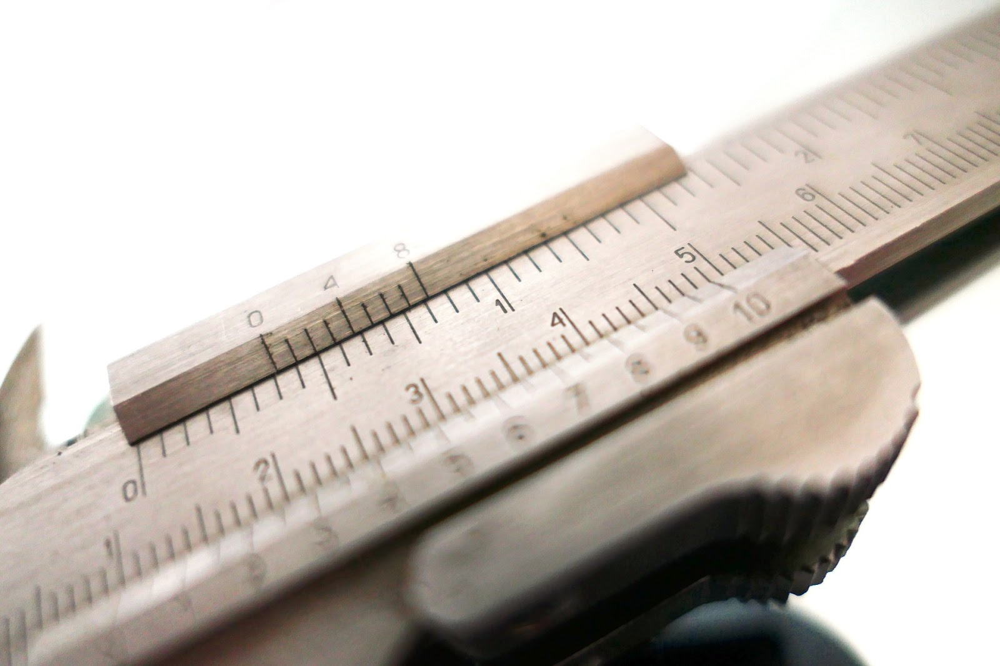

Mistar adalah alat ukur besaran pokok panjang (l). Alat ini berbentuk plat panjang yang terbuat dari kayu, plastik (mika), atau besi, kemudian dilengkapi dengan garis-garis skala pengukuran.
Skala pada mistar dibagi menjadi dua, yaitu skala utama dan skala nonius (terkecil). Skala utama pada mistar dinyatakan dalam satuan cm, sedangkan skala noniusnya dalam satuan mm. Tetapi, kebanyakan mistar yang beredar saat ini dilengkapi dengan skala tambahan dalam satuan inci.
Skala terkecil mistar adalah 1 ml, artinya panjang minimal yang bisa diukur oleh mistar adalah 1 ml dengan ketelitian pengukuran setengah dari skala terkecilnya, yaitu 0,5 mm atau 0,05 cm.
Dekatkan mistar dengan benda yang akan diukur
Pastikan tanda nol mistar sejajar dengan salah satu ujung benda.
Sekarang, perhatikan ujung yang satunya, baca angka terakhir pada mistar yang sejajar dengan ujung tersebut, maka di dapatlah panjang benda.
 Selamat Datang di Website Liedy
Selamat Datang di Website Liedy.png) Terimakasih Kepada Civitas Akademik Unindra
Terimakasih Kepada Civitas Akademik Unindra
.jpg)